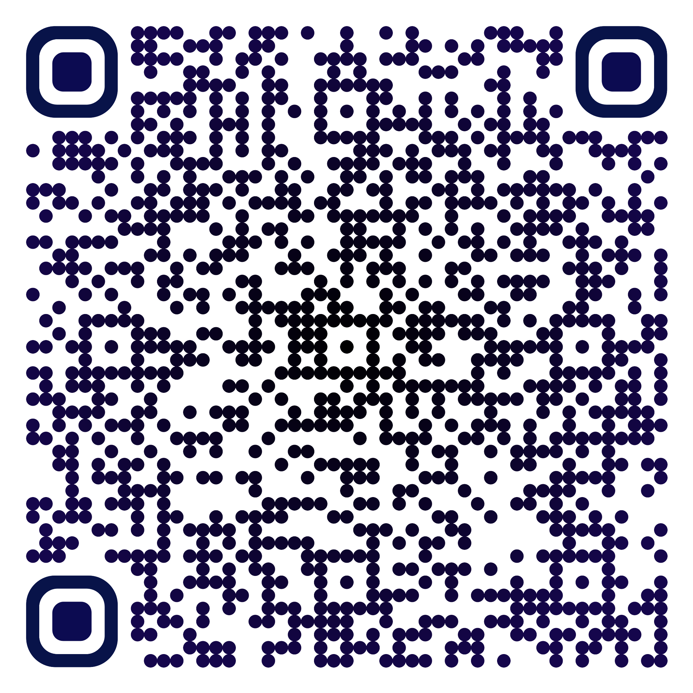

Clases particulares — La Plata
Apoyo académico en ciencias exactas para estudiantes universitarios y preuniversitarios. Riguroso, claro y sin distracciones.
No enseñamos a aprobar: enseñamos a razonar.
§ 1 · Método
Resolver problemas complejos exige salir de la mecanicidad: entender el porqué detrás de cada fórmula para abordar cualquier desafío desde una nueva perspectiva.
Axioma I
Precisión absoluta en cada concepto enseñado.
Axioma II
Explicaciones directas que desmenuzan lo complejo hasta hacerlo comprensible.
Axioma III
Foco en lo esencial: sin ruido en la estética ni en la pedagogía.
Axioma IV
Un estándar de calidad superior, digno del nivel universitario.
§ 2 · Programa
Clases personalizadas — Modalidad presencial y virtual
